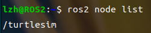
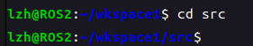
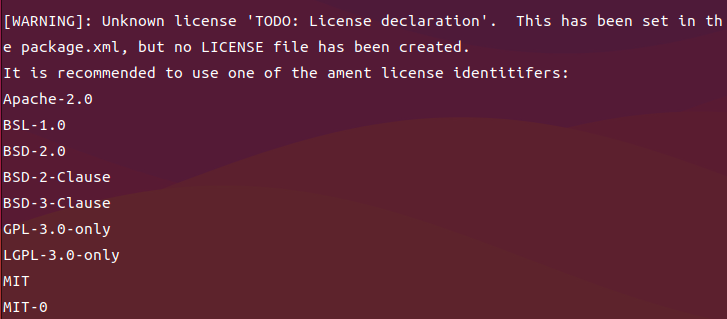
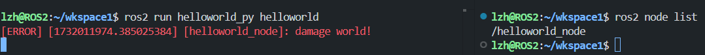
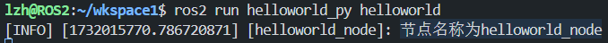
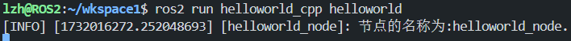

第四章 工作空间与功能包¶
4.1 ROS2的节点¶
4.1.1 节点介绍¶
每一个节点即是一个模块化的功能，各个节点通过四个通信机制进行信息通信交互
ROS2有四种通信方式：
- 话题： 是一种单向通信模型，在通信双方中，发布方发布数据，订阅方订阅数据，数据流单向的由发布方传输到订阅方。
- 服务： 是一种基于请求响应的通信模型，在通信双方中，客户端发送请求数据到服务端，服务端响应结果给客户端。
- 动作： 是一种带有连续反馈的通信模型，在通信双方中，客户端发送请求数据到服务端，服务端响应结果给客户端，但是在服务端接收到请求到产生最终响应的过程中，会发送连续的反馈信息到客户端。
- 参数： 是一种基于共享的通信模型，在通信双方中，服务端可以设置数据，而客户端可以连接服务端并操作服务端数据。
下面是官方给的图：

4.1.2 启动节点¶
终端指令：
package_name--功能包的名称 executable_name--可执行文件（即功能包下的 节点 ）
举例：启动小乌龟节点
4.1.3 节点常用的命令行指令¶
查看节点列表(已经启用的节点)：
如下图，打开turtlesim下的turtlesim_node节点，可以查看到节点turtlesim

查看节点信息，注意节点名称有/：

重映射节点名称：
4.2 ROS2工作空间与编译工具¶
注意：一个工作空间下可以有多个功能包，一个功能包可以有多个节点存在
4.2.1 ROS2编译工具colcon¶
什么是colcon
colcon想当于ros1中的catkin编译工具。
安装colcon工具
colcon相关指令
pkg_name属于 变量 ，即功能包的名称
只编译一个包
不编译测试单元
运行编译的包的测试
允许通过更改src下的部分文件来改变install（重要），每次调整 python 脚本时都不必重新build了
4.2.2 创建工作空间¶
创建 工作空间 文件夹，并编译文件夹，编译以后，会多出build 、install、 log 三个文件夹
mkdir： 创建一个目录，mkdir -p ：递归创建目录，即使上级目录不存在，会按目录层级自动创建目录
准备好工作空间以后就可以进行功能包的创建和程序的编写，分别使用C++和Python编程语言
4.3 功能包示例¶
4.3.3 Python示例¶
！！！进入wkspace1/src目录

1. 创建功能包¶
ros2 pkg create helloworld_py --build-type ament_python --dependencies rclpy --node-name helloworld
参数介绍：
helloworld_py----功能包的名称--build-type----编译方式，ament_python 和 ament_cmake 分别用于python和C++--dependencies----依赖名称， rclpy 和 rclcpp 分别用于python和C++--node-name----节点名称 ，可以在创建功能包的时候创建一个节点，也可以选择自己手动添加
创建功能包以后会出现一个警告“未知的许可证”

这个经过不影响后续操作，感觉不舒服，添加一个许可证即可消除警告
ros2 pkg create helloworld_py --build-type ament_python --dependencies rclpy --node-name helloworld --license Apache-2.0
2. 程序源码¶
import rclpy
def main():
# 初始化 ROS2
rclpy.init()
# 创建节点
node = rclpy.create_node("helloworld_node")
# 输出文本
node.get_logger().error("damage world!")
rclpy.spin(node)
# 释放资源
rclpy.shutdown()
if __name__ == '__main__':
main()
3. 修改setup.py¶
helloworld = helloworld_py.helloworld:main 即 映射名称 = 功能包名称.源代码文件名称:函数名称，”映射名称“是在终端运行可执行文件时后使用的名称。
from setuptools import setup
package_name = 'pkg02_helloworld_py'
setup(
name=package_name,
version='0.0.0',
packages=[package_name],
data_files=[
('share/ament_index/resource_index/packages',
['resource/' + package_name]),
('share/' + package_name, ['package.xml']),
],
install_requires=['setuptools'],
zip_safe=True,
maintainer='ros2',
maintainer_email='ros2@todo.todo',
description='TODO: Package description',
license='TODO: License declaration',
tests_require=['pytest'],
entry_points={
'console_scripts': [
# 映射源文件与可执行文件
'helloworld = helloworld_py.helloworld:main'
],
},
)
4. 编译运行节点¶
打开vscode或终端，进入wkspace1目录：
编译功能包
source环境
运行节点
5. 节点混淆错误解释¶
初学者很容易弄混，setup.py中的 映射名称 helloworld，和源代码中的rclpy.create_node("helloworld_node")中的helloworld_node都是节点。但事实上，helloworld是映射源文件与可执行文件的一个别称，仅用于终端运行可执行文件时使用；而helloworld_node才是真正的节点名称，即可以用ros2 node list查到的节点，如下图：

4.3.4 C++示例¶
！！！进入wkspace1/src目录
1. 创建功能包¶
ros2 pkg create helloworld_cpp --build-type ament_cmake --dependencies rclcpp --node-name helloworld --license Apache-2.0
为什么添加
license参数在python那一章有介绍，可以往上翻一翻
参数介绍：
helloworld_cpp----功能包的名称--build-type----编译方式， ament_python 和 ament_cmake 分别用于python和C++--dependencies----依赖名称，rclpy 和 rclcpp 分别用于python和C++--node-name----节点名称 ，可以在创建功能包的时候创建一个节点，也可以选择自己手动添加
2. 程序源码¶
#include "rclcpp/rclcpp.hpp"
int main(int argc, char ** argv)
{
// 初始化 ROS2
rclcpp::init(argc,argv);
// 创建节点
auto node = rclcpp::Node::make_shared("helloworld_node");
// 输出文本
RCLCPP_INFO(node->get_logger(),"hello world!");
// 释放资源
rclcpp::shutdown();
return 0;
}
3. 修改CMakeLists.txt¶
cmake_minimum_required(VERSION 3.8)
project(pkg01_helloworld_cpp)
if(CMAKE_COMPILER_IS_GNUCXX OR CMAKE_CXX_COMPILER_ID MATCHES "Clang")
add_compile_options(-Wall -Wextra -Wpedantic)
endif()
# find dependencies
find_package(ament_cmake REQUIRED)
# 引入外部依赖包
find_package(rclcpp REQUIRED)
# 映射源文件与可执行文件
add_executable(helloworld src/helloworld.cpp)
# 设置目标依赖库
ament_target_dependencies(
helloworld
"rclcpp"
)
# 定义安装规则
install(TARGETS helloworld
DESTINATION lib/${PROJECT_NAME})
if(BUILD_TESTING)
find_package(ament_lint_auto REQUIRED)
# the following line skips the linter which checks for copyrights
# comment the line when a copyright and license is added to all source files
set(ament_cmake_copyright_FOUND TRUE)
# the following line skips cpplint (only works in a git repo)
# comment the line when this package is in a git repo and when
# a copyright and license is added to all source files
set(ament_cmake_cpplint_FOUND TRUE)
ament_lint_auto_find_test_dependencies()
endif()
ament_package()
4. 编译运行节点¶
打开vscode或终端，进入wkspace1目录：
编译单个功能包

source环境
运行节点
4.3.5 运行优化¶
每次终端中执行工作空间下的节点时，都需要调用. install/setup.bash指令，使用不便，优化策略是，可以将该指令的调用添加进~/setup.bash，操作格式如下：
示例：
4.3.6 面向过程编程¶
面向过程编程即是C++和Python的一大特点，同时也是ROS2区分于ROS的编程风格差异。
1. Python¶
#!/usr/bin/env python3
import rclpy
from rclpy.node import Node
class TestNode(Node):
"""
继承Node类,并创建一个节点,打印节点名称
"""
def __init__(self, node):
super().__init__(node)
self.node = node
self.get_logger().info(f"节点名称为{self.node}")
def main(args=None):
"""
ros2运行该节点的入口函数
"""
rclpy.init(args=args) # 初始化rclpy
node = TestNode("helloworld_node") # 新建一个节点
rclpy.spin(node) # 保持节点运行，检测是否收到退出指令（Ctrl+C）
rclpy.shutdown() # 关闭rclpy

2. C++¶
#include "rclcpp/rclcpp.hpp"
#include <string>
using namespace std;
/*
创建一个类节点，名字叫做TestNode,继承自Node.
*/
class TestNode : public rclcpp::Node
{
public:
// 构造函数,有一个参数为节点名称
TestNode(string name) : Node(name)
{
// 打印一句自我介绍
RCLCPP_INFO(this->get_logger(), "节点的名称为:%s.",name.c_str());
}
};
int main(int argc, char **argv)
{
rclcpp::init(argc, argv);
/*产生一个Wang2的节点*/
auto node = make_shared<TestNode>("helloworld_node");
/* 运行节点，并检测退出信号*/
rclcpp::spin(node);
rclcpp::shutdown();
return 0;
}
